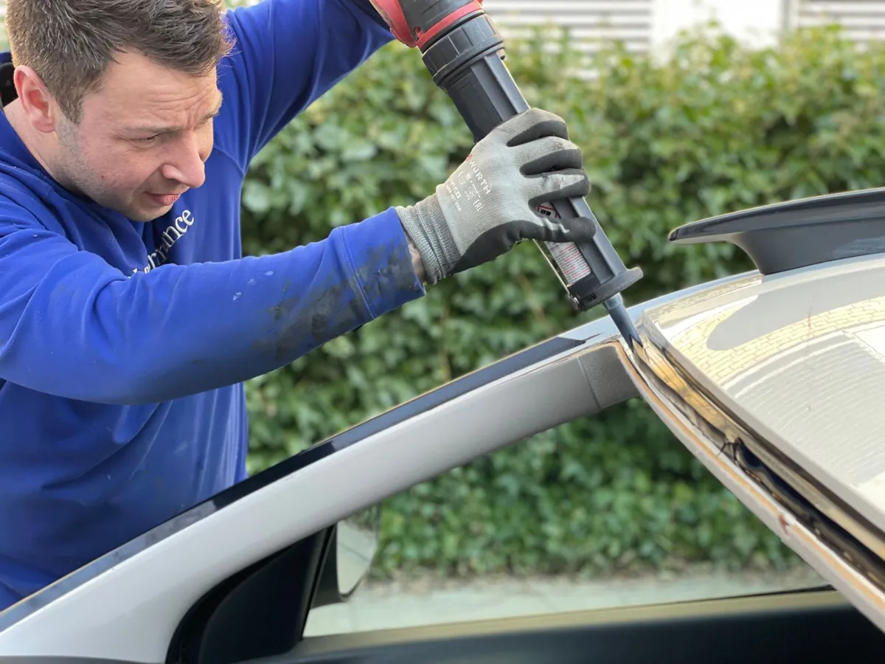

Auto Glass Repair in Cocoa, FL — We Come to You
Windshield replacement, rock chip repair, and side or rear window replacement at your home or job site in Cocoa and central Brevard County.
(321) 417-3847- Mobile service across Cocoa
- We can help with insurance claims
- ADAS camera calibration help
- Same-week appointments
What Is Auto Glass Repair in Cocoa, FL?
Auto glass repair in Cocoa covers fixing or replacing the windshield, side windows, and rear glass on cars, trucks, and SUVs. Small chips get a resin fill that seals the damage, while cracked or badly pitted windshields are cut out and replaced with new laminated glass. Our technicians bring the glass and tools to your driveway or parking lot, so there is no shop visit.
Drivers in Cocoa need this work more often than most. Daily runs on I-95, State Road 528, and US-1 kick up gravel from trucks and construction zones, and a single rock can leave a chip that turns into a crack within days. Learn more about our auto glass services in Cocoa.

When Do You Need Windshield Repair or Replacement in Cocoa?
You need windshield service in Cocoa when damage starts to block your view, weaken the glass, or let water in. These are the most common signs we see on Space Coast vehicles:
- A rock chip from I-95 or SR-528. Chips smaller than a quarter can usually be repaired in about 30 minutes if you call quickly.
- A crack that keeps growing. Summer heat and cold air conditioning make cracks run across the glass, which means the windshield needs to be replaced.
- Storm or hurricane debris. Flying branches and roofing material during Florida storm season can shatter side windows and crack windshields.
- Leaks or wind noise. Water on the dash after an afternoon downpour often means a failed seal around the glass.
- A broken side or rear window. Break-ins and accidents leave tempered glass in pieces, and the opening needs to be closed up the same day.
How Mobile Auto Glass Service Works in Cocoa
Mobile auto glass service in Cocoa follows a simple process from your first call to driving away.
- Call with your vehicle infoTell us the year, make, and model, plus where the damage is. We confirm the right glass and any camera features.
- Check insuranceIf you plan to use insurance, we help you start the claim so you know what is covered before work begins.
- We come to youA technician meets you at home or work in Cocoa with the glass, adhesive, and tools.
- Repair or replaceChip repairs take about 30 minutes. Full windshield replacements take about an hour plus adhesive cure time.
- Final checkWe clean up all glass, check the seal, and explain any camera calibration your vehicle needs.
Why Cocoa Drivers Choose Us for Auto Glass
Cocoa drivers choose our auto glass service because we handle the whole job where the car is parked. You do not lose half a day sitting in a waiting room or finding a ride from a shop.
Built around Space Coast weather
Florida afternoon storms roll in fast. We schedule windshield installs in Cocoa for drier parts of the day and move appointments if rain threatens, because adhesive needs a dry surface to bond properly.
Help with Florida windshield claims
Florida drivers with comprehensive coverage are often owed a windshield replacement with no deductible. We walk you through the claim so there are no surprises.
Camera-equipped vehicles
Many newer cars have a lane-keeping camera behind the windshield. We confirm calibration needs up front instead of after the glass is in.

How Much Does Auto Glass Repair Cost in Cocoa?
The cost of auto glass repair in Cocoa depends on whether the glass can be repaired or must be replaced, and on the vehicle itself. A chip repair is the lowest-cost option. A windshield replacement costs more when the glass has rain sensors, heating elements, a heads-up display, or a camera that needs calibration after install.
Insurance also changes what you pay. Florida drivers with comprehensive coverage may owe nothing out of pocket for a new windshield. Call (321) 417-3847 with your vehicle details and we will give you an exact quote for your car.
Is Mobile Auto Glass Service Right for You?
Mobile auto glass service in Cocoa is a good fit for most drivers with a chipped or cracked windshield or a broken side or rear window. It works best when you have a dry spot to park, such as a driveway, carport, garage, or office lot.
Mobile service may not be the right choice if your vehicle has major body damage around the windshield frame after a crash. In that case, a body shop should repair the frame first. If you are not sure, call us and describe the damage. We will tell you honestly whether it is a repair, a replacement, or a body shop job. See our windshield replacement in Cocoa page for more detail.
Frequently Asked Questions
How long does windshield replacement take in Cocoa, FL?
Windshield replacement in Cocoa usually takes about an hour of hands-on work at your home or office. After the new glass is set, the urethane adhesive needs time to cure before the car is safe to drive, and the technician will tell you the exact drive-away time for the adhesive used that day. Florida humidity and heat help most adhesives cure faster.
Does Florida insurance cover windshield replacement with no deductible?
Florida law has long required auto policies with comprehensive coverage to replace a damaged windshield without charging the driver a deductible. Coverage depends on your specific policy, so the fastest way to know is to call your insurer or have us check it for you when you call about auto glass in Cocoa. Side and rear windows are usually handled under your normal comprehensive deductible.
Can a windshield chip be repaired instead of replaced?
A windshield chip can usually be repaired if it is smaller than a quarter, is not right at the edge of the glass, and is not directly in the driver’s line of sight. A resin repair in Cocoa takes about 30 minutes and stops the chip from spreading. Long cracks, chips at the edge, and damage on the inner layer of glass need a full windshield replacement instead.
Why do windshield chips spread so fast in Cocoa?
Windshield chips spread quickly in Cocoa because Florida heat makes the glass expand while blasting the air conditioning cools the inside surface. That temperature swing puts stress on the weak spot, and potholes or a hard door slam can push a chip into a long crack overnight. Getting a chip filled within a few days is the best way to avoid a full replacement.
Do I need ADAS camera calibration after a new windshield?
Many newer vehicles have a forward camera mounted on the windshield for lane keeping, automatic braking, and adaptive cruise. When that windshield is replaced in Cocoa, the camera has to be recalibrated so those safety systems read the road correctly. We will tell you if your vehicle needs calibration when you call with your year, make, and model.
Do you come to me for auto glass repair in Cocoa?
Yes, our auto glass service in Cocoa is mobile, so we come to your driveway, office parking lot, or job site. Most repairs and replacements can be done on site as long as the weather is dry, and we can reschedule around an afternoon storm. We cover Cocoa, Rockledge, Merritt Island, Cocoa Beach, Port St. John, and nearby areas.
Where We’re Based
1643 N Cocoa Blvd, Cocoa, FL 32922
Please note: This is our service business address — not a storefront or showroom. Cocoa Auto Glass Repair is a mobile auto glass service, so we come to you anywhere in Cocoa and the office isn’t open to walk-in visitors. Call us and we’ll set up a free quote.
Cracked or Chipped Glass in Cocoa?
Call now for a free auto glass quote. We come to your home or job site anywhere in central Brevard County.
Call (321) 417-3847 for a Free Quote